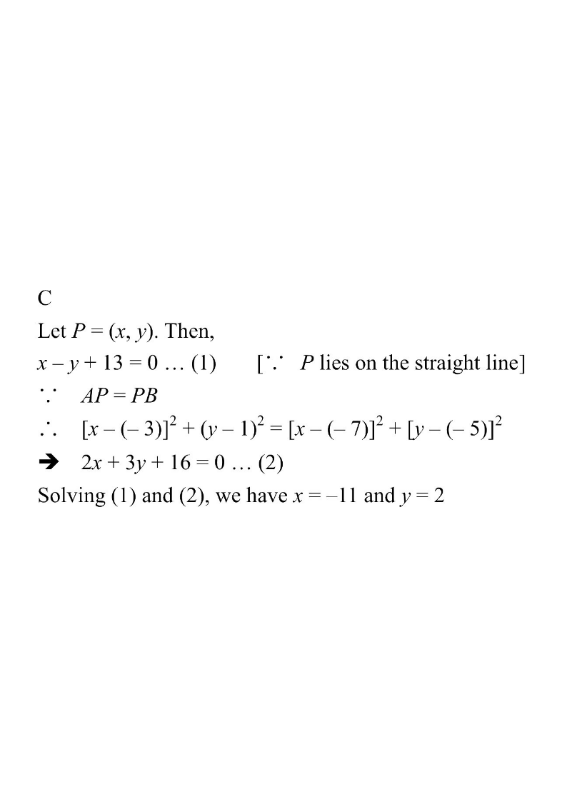

坐標幾何 · 1 分題

中點 $M\left(\dfrac{-3-7}{2},\dfrac{1-5}{2}\right)=(-5,-2)$；$m_{AB}=\dfrac{1+5}{-3+7}=\dfrac{3}{2}$。
$y+2=-\dfrac{2}{3}(x+5)\Rightarrow 2x+3y+16=0$。
由 $x=y-13$ 代入：$2(y-13)+3y+16=0\Rightarrow 5y=10\Rightarrow y=2$，故選 C。